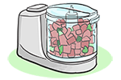

Module: Fatigue and Energy Conservation
Janet L. Poole, PhD, OTR/L, Cindy Mendelson, PhD, RN, Laura Dyas, LSW, LPC, MA, Mary Alore, MBA
There are a wide variety of energy-saving devices, such as reachers (which allow you to pick things up with out bending or stretching), microwavable meals, and precut salad greens. Think of these devices as tools that let you get the most out of your day. Don’t get fooled into thinking that using these devices means that you are lazy. Quite the opposite, it means that you are smart enough to save your energy for other activities.
See the module on “Activities of Daily Living” for ideas for energy saving devices.
In addition to these tips, it is also worth mentioning that smoking can be a significant source of energy deprivation, along with a host of other negative effects.
Do not smoke.
Smoking is a major health risk for anyone. However, those risks are much higher in people with scleroderma. Smoking:
- deprives your body of needed oxygen
- increases the severity of Raynaud’s phenomenon
- delays wound healing
- destroys your lung tissue
- deprives your body of much needed oxygen, a critical factor in fatigue